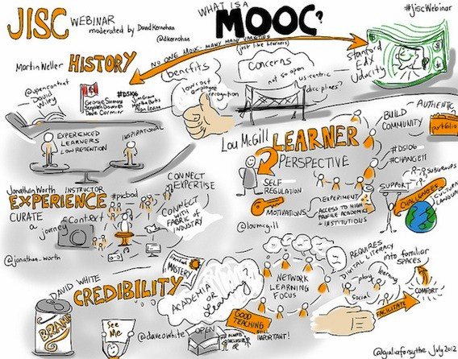

5.2 O que é um MOOC?



5.2.1 MOOCs: uma disrupção massiva?
Provavelmente nenhum desenvolvimento no ensino nos últimos anos foi tão controverso quanto o surgimento dos Cursos On-line Abertos e Massivos (MOOCs - Massive Open Online Courses). Em 2013, o escritor Thomas Friedman escreveu no New York Times:
...nada tem mais potencial para nos permitir reformular o ensino superior do que o curso on-line aberto e massivo... Por relativamente pouco dinheiro, os EUA poderiam alugar um espaço em uma aldeia egípcia, instalar duas dezenas de computadores e acesso à internet de alta velocidade via satélite, contratar um professor local como facilitador e convidar qualquer egípcio que quisesse fazer cursos on-line com os melhores professores do mundo, com legendas em árabe... Vejo um dia próximo em que você criará o seu próprio diploma universitário fazendo os melhores cursos on-line dos melhores professores de todo o mundo... pagando apenas uma taxa nominal pelos certificados de conclusão. Isso mudará o ensino, a aprendizagem e o caminho para o emprego.
Muitos outros se referiram aos MOOCs como um exemplo clássico do tipo de tecnologia disruptiva que Clayton Christensen (2010) argumentou que mudará o mundo da educação. Outros sustentaram que os MOOCs não são grande coisa, apenas uma versão mais moderna da radiodifusão educativa, e não afetam realmente os fundamentos básicos da educação e, em particular, não respondem ao tipo de aprendizagem necessária na era digital.
Os MOOCs podem ser vistos, portanto, ou como uma grande revolução na educação ou apenas como mais um exemplo do exagero desmedido que frequentemente envolve a tecnologia, particularmente nos EUA. Argumentarei que os MOOCs são um desenvolvimento significativo, mas apresentam limitações severas para o desenvolvimento dos conhecimentos e competências necessários na era digital.
5.2.2 Características principais
Todos os MOOCs apresentam algumas características comuns, embora vejamos que o termo MOOC abrange uma gama cada vez mais ampla de designs.
5.2.2.1 Massivo (Massive)
Em 2019, a Coursera contava com mais de 35 milhões de inscrições, e o seu maior curso registrava 240.000 participantes. Os números astronômicos (na casa das centenas de milhares) que se inscreviam nos primeiros MOOCs não se repetem sempre nos MOOCs mais recentes, mas os números ainda são expressivos. Por exemplo, em 2013, a Universidade da Colúmbia Britânica ofereceu vários MOOCs através da Coursera, com o número inicial de inscritos variando de 25.000 a 190.000 por curso (Engle, 2014).
No entanto, ainda mais importante do que os números absolutos é o fato de que, em princípio, os MOOCs possuem escalabilidade infinita. Tecnicamente não há limite para o seu tamanho final, uma vez que o custo marginal de adicionar cada participante extra é nulo para as instituições que oferecem MOOCs. (Na prática isso não é totalmente verdade, pois os custos de tecnologia central, backup e largura de banda aumentam e, como veremos, pode haver alguns custos indiretos para a instituição à medida que o número de participantes cresce. No entanto, o custo de cada participante adicional é tão pequeno, dados os grandes volumes, que pode ser mais ou menos desconsiderado). A escalabilidade dos MOOCs é provavelmente a característica que mais tem atraído a atenção, especialmente dos governos, mas deve-se notar que esta é também uma característica da televisão e do rádio de difusão, não sendo, portanto, exclusiva dos MOOCs.
5.2.2.2 Aberto (Open)
Pelo menos nos MOOCs iniciais, o acesso era gratuito para os participantes, embora um número crescente de MOOCs esteja cobrando uma taxa para avaliação que leva a um selo (badge) ou certificado, além de outras tarifas. Por exemplo, em 2019 a Coursera cobrava entre 29 e 99 dólares por curso.
Não há pré-requisitos para os participantes, além do acesso a um computador ou dispositivo móvel e à internet. No entanto, o acesso em banda larga é essencial para os MOOCs que utilizam streaming de vídeo, o que limita seriamente o seu potencial de alargamento do acesso ao ensino superior nos países menos desenvolvidos.
Há outro aspecto significativo em que os MOOCs através da Coursera e de algumas outras plataformas de MOOC não são totalmente abertos (consulte o Capítulo 11 para obter mais detalhes sobre o que constitui o termo “aberto” na educação). A Coursera detém os direitos sobre os materiais, pelo que estes não podem ser adaptados ou reutilizados sem autorização, e os materiais podem ser removidos do site da Coursera quando o curso termina. Além disso, a Coursera decide quais instituições podem hospedar MOOCs na sua plataforma — o que não constitui um acesso aberto para as instituições. Por outro lado, a edX é uma plataforma de código aberto, pelo que qualquer instituição que se junte à edX pode desenvolver os seus próprios MOOCs com as suas próprias regras relativas aos direitos dos materiais. Os cMOOCs são geralmente completamente abertos, mas, uma vez que os próprios participantes dos cMOOCs criam grande parte, se não a totalidade, dos materiais, nem sempre é claro a quem pertencem os direitos e durante quanto tempo os materiais do MOOC permanecerão disponíveis.
Na verdade, existem muitos outros tipos de materiais on-line que também são abertos e gratuitos na internet, tais como livros didáticos abertos e recursos educacionais abertos, frequentemente de formas mais acessíveis para reutilização do que os materiais dos MOOCs (veja o Capítulo 11).
5.2.2.3 On-line (Online)
Os MOOCs são oferecidos, pelo menos inicialmente, de forma totalmente on-line, mas, cada vez mais, as instituições estão negociando com os detentores dos direitos para utilizar os materiais dos MOOCs em um formato híbrido (blended) para uso no campus. Em outras palavras, a instituição fornece suporte de aprendizagem para os materiais do MOOC através de tutores e professores presenciais. Por exemplo, na San Jose State University, os estudantes do campus utilizaram materiais de MOOCs de cursos da Udacity, incluindo aulas expositivas, leituras e testes rápidos, e depois os professores aproveitavam o tempo de aula em atividades de pequenos grupos, projetos e testes para verificar o progresso (Collins, 2013). Outras variações no design dos MOOCs serão discutidas em mais detalhes na Seção 5.3.
Mais uma vez, contudo, convém notar que os MOOCs não são os únicos a oferecer cursos on-line. Em 2017, existiam 6,3 milhões de estudantes só nos EUA fazendo disciplinas on-line valendo créditos, como parte de programas de graduação regulares (Seaman et al., 2018).
5.2.2.4 Cursos (Courses)
Uma característica que diferencia os MOOCs da maioria dos outros recursos educacionais abertos é o fato de estarem organizados em um curso completo. No entanto, o que isto significa exatamente para os participantes não está muito claro. Embora muitos MOOCs ofereçam certificados ou selos de conclusão de curso, até o momento estes não foram aceitos, na maioria dos casos, para admissão em universidades ou para equivalência de créditos, mesmo (ou especialmente) pelas instituições que oferecem os MOOCs.
5.2.3 Resumo
Pode-se observar que todas as características fundamentais dos MOOCs existem, sob uma forma ou outra, fora deles. O que torna os MOOCs únicos, contudo, é a combinação das quatro características fundamentais e, em especial, o fato de serem massivos e abertos aos participantes (embora nem sempre gratuitos).
Referências
Christensen, C. (2010) Disrupting Class, Expanded Edition: How Disruptive Innovation Will Change the Way the World Learns New York: McGraw-Hill
Collins, E. (2013) SJSU Plus Augmented Online Learning Environment Pilot Project Report San Jose CA: San Jose State University
Engle, W. (2104) UBC MOOC Pilot: Design and Delivery Vancouver BC: University of British Columbia
Friedman, T. (2013) Revolution Hits the Universities New York Times, 26 de janeiro
Seaman, J.E., Allen, I.E., and Seaman, J. (2018) Grade Increase: Tracking Distance Education in the United States Wellesley MA: The Babson Survey Research Group
Atividade 5.2
- Quando um MOOC não é um MOOC? Quais são as características essenciais para que um curso seja um MOOC?
- Você consegue encontrar exemplos de MOOCs de provedores do seu próprio país ou região? Eles diferem de alguma forma das principais plataformas de MOOCs, como Coursera ou edX? De que maneiras?
- Eles constituem uma forma de educação inferior ou de baixa qualidade? Se sim, por quê? Quais critérios você usaria para julgar a qualidade de um MOOC? Escreva suas respostas e depois compare com o que leu no restante deste capítulo para ver se mudou de opinião.
Para minhas considerações sobre estas questões, clique no podcast abaixo
Um elemento de áudio foi excluído desta versão do texto. Você pode ouvi-lo on-line aqui: https://pressbooks.bccampus.ca/teachinginadigitalagev2/?p=150